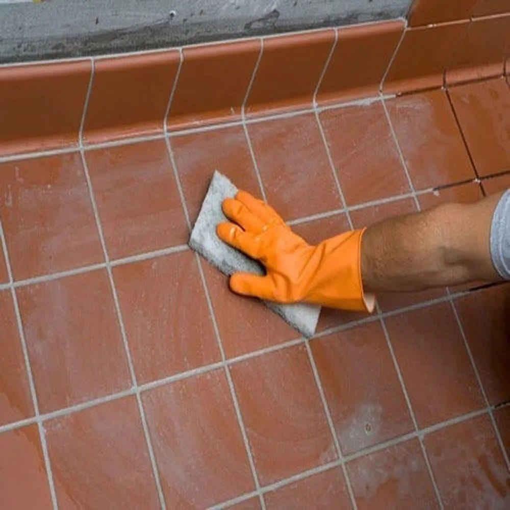
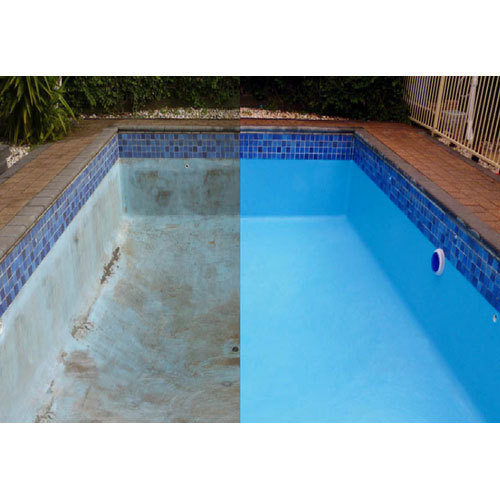
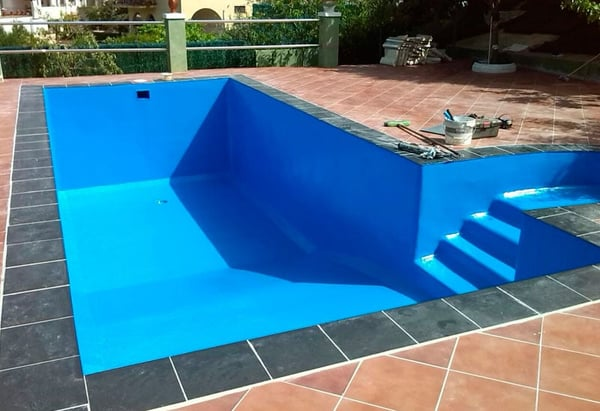
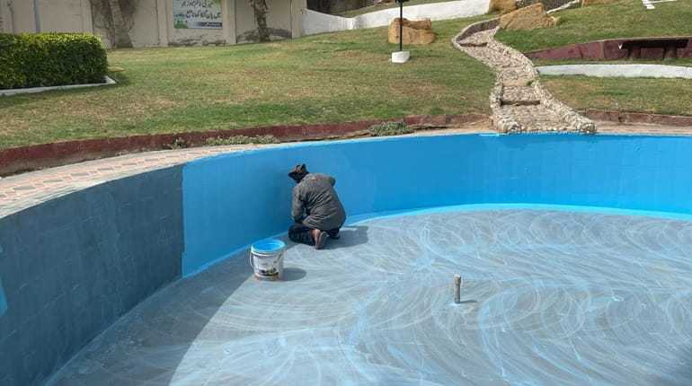
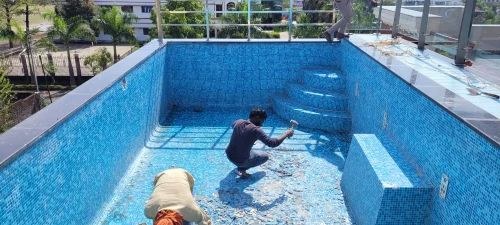

Swimming Pool Waterproofing
Leak-proof waterproofing systems for swimming pools.
Why Swimming Pool Waterproofing Is Important
Pools hold water continuously and even small leaks can cause major structural and water loss issues.
Materials Used
• Flexible cementitious coatings
• PU membranes
• Epoxy sealants
• Tile joint grouts
Our 5-Step Swimming Pool Waterproofing Process
Step 1: Pool shell inspection.
Step 2: Crack and joint treatment.
Step 3: Waterproof coating application.
Step 4: Tile fixing and grouting.
Step 5: Water filling test.
Project Image Gallery





Frequently Asked Questions
1. Pool leakage stopped?
Yes.
Yes.
2. Tile compatible?
Yes.
Yes.
3. Life?
10+ years.
10+ years.
4. Time?
7–10 days.
7–10 days.
5. Maintenance?
Low.
Low.